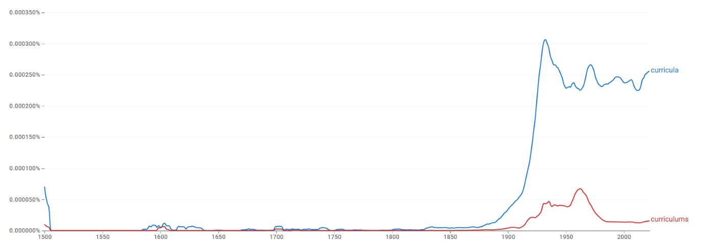
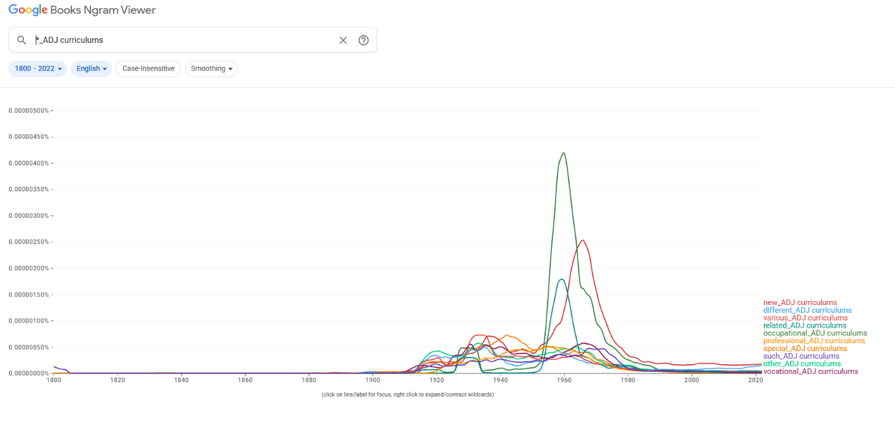
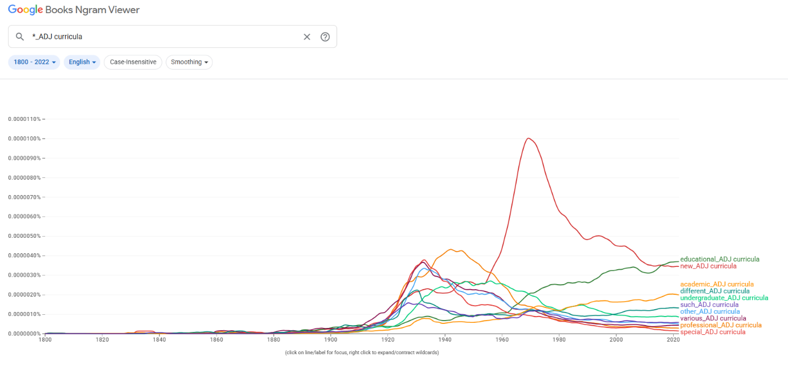
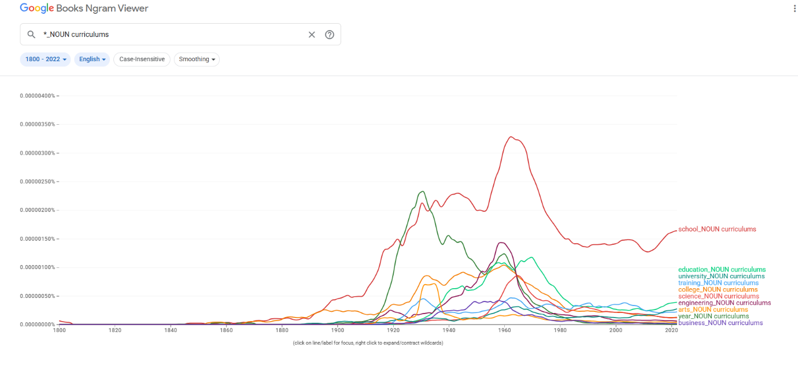
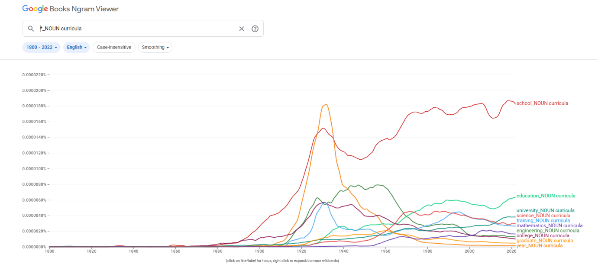
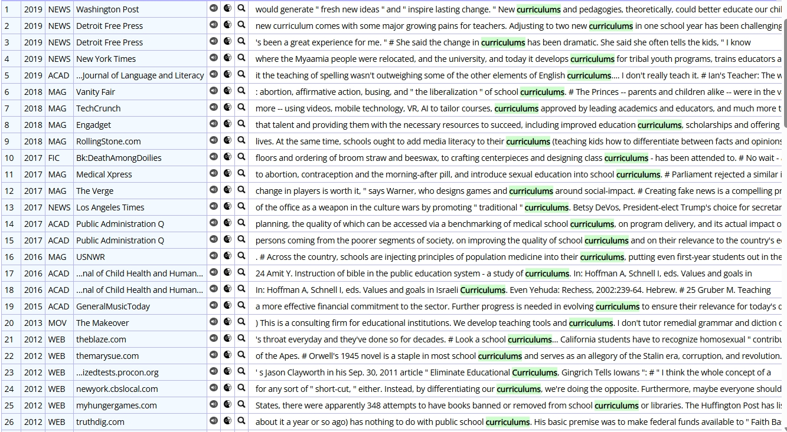
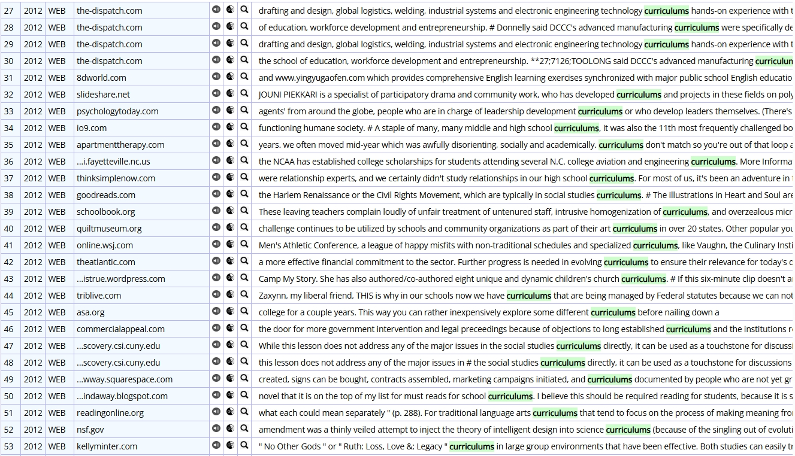
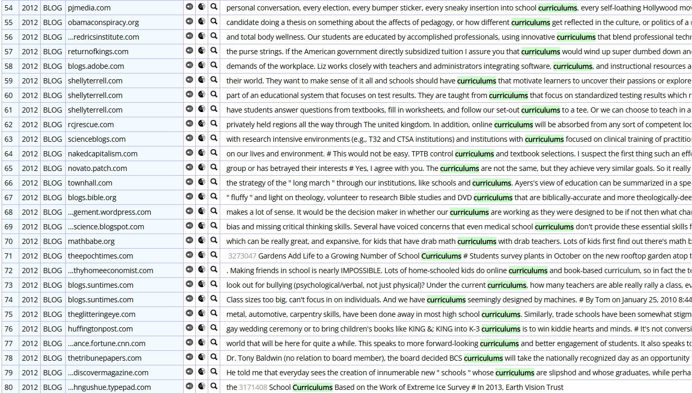
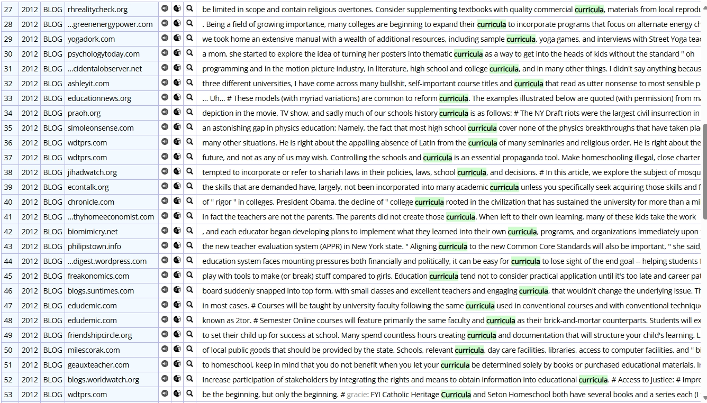
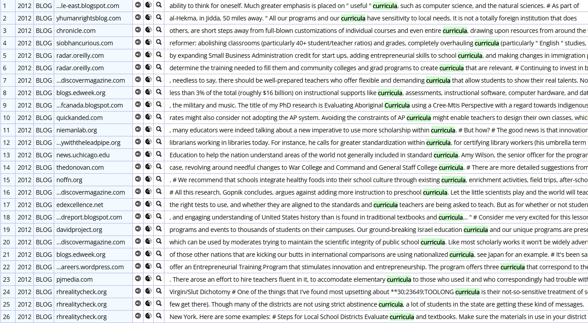

curricula/curriculums

결론
curricula와 curriculums는 ‘교육과정’이라는 동일 의미 영역을 공유하면서도 서로 다른 레지스터에 배분된다. curricula는 학술적·제도적 담화의 중심 형태로 자리 잡고, curriculums는 보다 일반적·실용적 맥락에서 제한적으로 쓰이는 변이형으로 기능한다. 따라서 고전형 우세 → 장기 고전형 우세 유지 → register 분화의 구조다.
연구 결과
과정 및 결론 도달 과정 · 사용 도구
1차 Ngram 사용량 그래프로 고전형의 우위와 규칙형의 제한적 잔존을, 2차 같은 그래프로 장기 고전형 우세 유지를 확인했다. 3차는 Ngram 연어(academic/undergraduate vs vocational/business)와 COCA 맥락 분석(학술·정책·전문 vs 뉴스·블로그·직업·상업 자료)으로 레지스터 차이를 해석했다.
세부 정보 · 구간 별 분절
초기에는 두 형태 모두 낮지만, 20세기 초반 이후 고전형 curricula가 빠르게 증가(특히 1920~1940년대)해 이후에도 높은 수준을 유지한다. 규칙형 curriculums는 20세기 전반까지 제한적이며, 1960년대 전후 상승 후 다시 감소해 주변적으로 유지된다. 현재 curricula가 뚜렷한 우위를 점한다.
장기 대등 경쟁이 아니라, 이른 시기부터 curricula가 중심을 확보하고 그 우위를 유지하는 가운데 curriculums가 주변적으로 잔존한 장기 고전형 우세 유지의 경로다.
curricula는 academic, undergraduate, professional 및 university, science, engineering과 결합해 고등교육·학술 제도와 강하게 연결되고, curriculums는 different, various, vocational, occupational, business와 결합해 일반적·실무적 프로그램 분류에 가깝다. COCA에서 curricula는 학술적 정의·공적 정책·전문 분야 교육·교육 철학에, curriculums는 대중 매체·웹/블로그·직업 교육·상업 자료·사회적 논쟁에 결부된다. 같은 의미 영역 안에서 고전형=공식·학술, 규칙형=일반·실용으로 갈리는 register 분화다.
curricula는 교육학과 대학 행정, 제도적 교육 담화의 중심 형태로 유지된 반면, 규칙형 curriculums는 공교육 현장과 실무 문서에서 보다 직관적인 형태로 제한적으로 사용되며, 두 형태가 서로 다른 레지스터에 배분되었다.
참조 이미지 · 연어 그래프와 COCA 용례
이미지를 누르면 크게 볼 수 있어요.








